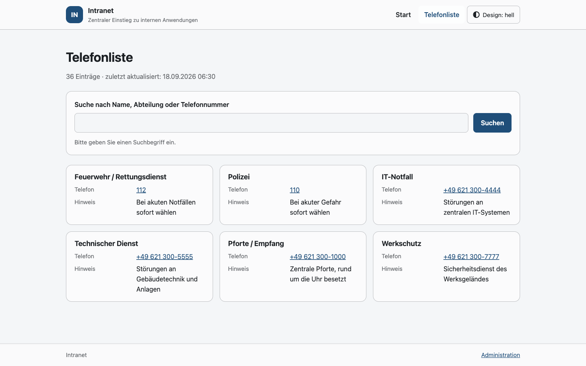
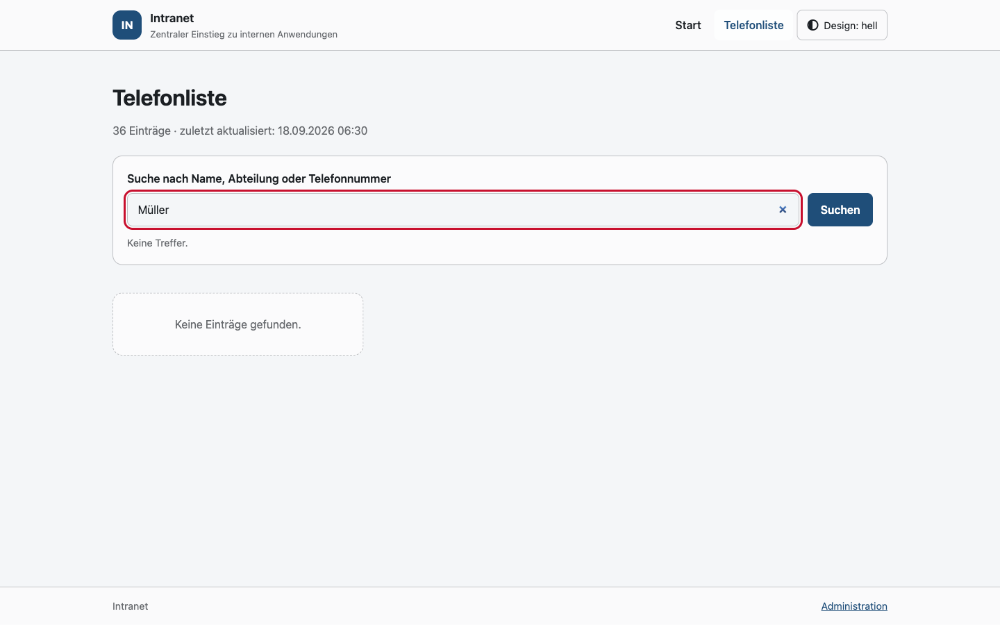
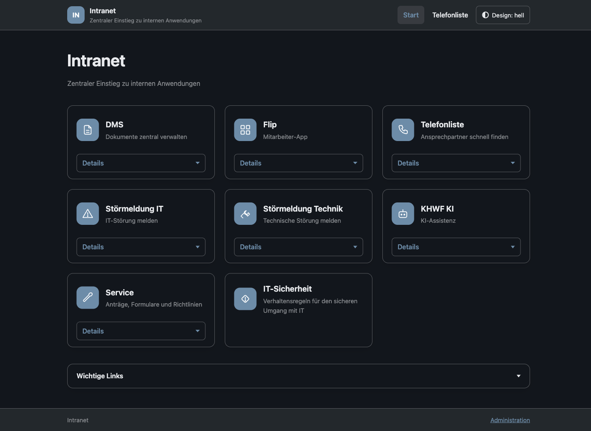

Leitfaden für Mitarbeiterinnen und Mitarbeiter: Startseite, Telefonliste, Unterseiten, Textseiten, Wichtige Links und Darstellung.
Version 1.0 · Stand: September 2026
Zielgruppe: alle Beschäftigten
1 Einleitung und Aufruf
Die Intranet-Landingpage ist die zentrale Einstiegsseite Ihrer Einrichtung. Sie bündelt
häufig benötigte Anwendungen, Kontaktdaten und aktuelle Informationen an einem Ort. Statt sich viele
einzelne Webadressen zu merken, rufen Sie nur die Startseite auf und erreichen von dort aus alle
hinterlegten Dienste.
Die Anwendung läuft in Ihrem Browser und benötigt keine Installation. Sie funktioniert mit allen
gängigen Browsern (Chrome, Edge, Firefox, Safari) sowohl am Desktop als auch auf Tablets und
Smartphones.
1.1 Seite aufrufen
Öffnen Sie Ihren Browser.
Geben Sie die interne Adresse der Startseite in die Adresszeile ein (z. B. https://intranet.example.org).
Die Startseite wird ohne Anmeldung angezeigt – alle Inhalte sind für angemeldete Beschäftigte im internen Netz frei zugänglich.
Hinweis
Die konkrete Adresse erhalten Sie von Ihrer IT-Abteilung. Sie können die Startseite als Lesezeichen oder
als Browser-Startseite festlegen.
2 Die Startseite
Die Startseite besteht aus drei Bereichen: der Titelleiste oben, den
Navigationskacheln in der Mitte und der Fußzeile unten. Je nach
Konfiguration erscheinen zusätzlich aktuelle Mitteilungen beim ersten Aufruf.
Abb. 1 Startseite mit Navigationskacheln.
2.1 Navigationskacheln
Jede Kachel steht für eine Anwendung, eine Seite oder einen externen Dienst. Ein Klick auf die Kachel
öffnet das jeweilige Ziel – interne Seiten im selben Fenster, externe Dienste in einem neuen Tab.
Kacheln mit einem kleinen Pfeil- oder „Details“-Symbol besitzen zusätzliche
Informationen (Detailbeschreibung), die Sie per Klick, beim Überfahren mit der Maus oder über die
Schaltfläche „Details“ einblenden können (siehe Kapitel 3).
2.2 Fußzeile
In der Fußzeile sind ein frei konfigurierbarer Text sowie – sofern eingestellt – Untertitel und weitere
Hinweise der Einrichtung hinterlegt. Diese Informationen werden zentral von der Administration gepflegt.
Daneben finden Sie hier den Link Anwenderhandbuch (sofern von der Administration aktiviert)
sowie den Link zum Administrationsbereich.
3 Kacheln und Detailbeschreibungen
Viele Kacheln besitzen eine kurze Beschreibung, die direkt auf der Kachel sichtbar ist, sowie eine
ausführlichere Detailbeschreibung. Wie die Detailbeschreibung angezeigt wird, legt die
Administration fest. Es gibt drei mögliche Darstellungen:
Modus
Verhalten
Beim Überfahren (Hover)
Die Detailbeschreibung erscheint, sobald Sie den Mauszeiger über die Kachel bewegen.
Aufklappen
Die Detailbeschreibung wird durch einen Klick auf die Kachel bzw. auf „Details“ ein- und ausgeblendet.
Beides
Die Beschreibung reagiert sowohl auf Überfahren als auch auf Klick.
Hinweis
Unabhängig vom gewählten Modus bleibt die Beschreibung per Tastatur (Tab-Taste) und auf Touchgeräten über
die Schaltfläche „Details“ erreichbar.
Abb. 2 Unterseite „Service“ – Kacheln mit Kurz- und Detailbeschreibungen.
4 Mitteilungen
Wichtige Ankündigungen der Verwaltung werden beim Aufruf der Startseite als Mitteilung
(Dialogfenster) eingeblendet. So erreichen Sie dringende Informationen, ohne danach suchen zu müssen.
Abb. 3 Mitteilung beim Öffnen der Startseite.
Lesen Sie den Text der Mitteilung.
Schließen Sie das Fenster über die Schaltfläche „Schließen“ oder „Verstanden“.
Wird eine Mitteilung einmal geschlossen, erscheint sie bei späteren Besuchen erst wieder, wenn sie
inhaltlich geändert wurde. So werden Sie nicht wiederholt mit derselben Meldung unterbrochen.
5 Telefonliste
Über die Kachel „Telefonliste“ (bzw. den entsprechenden Menüpunkt) gelangen Sie zum
internen Telefonverzeichnis. Es zeigt Name, Abteilung, Durchwahl und – sofern hinterlegt – Mobilnummer
und E-Mail-Adresse. Einträge ohne E-Mail-Adresse werden nicht angezeigt.

Abb. 4 Telefonliste mit allen hinterlegten Kontakten.
5.1 Suchen
Geben Sie in das Suchfeld einen Namen, eine Durchwahl oder eine Abteilung ein. Die Trefferliste wird
während der Eingabe automatisch aktualisiert.

Abb. 5 Gefilterte Telefonliste nach einer Suchanfrage.
5.2 Anrufen
Sofern die Administration die Funktion aktiviert hat, sind Telefon- und Mobilnummern als anklickbare
Links (tel:) dargestellt. Ein Klick öffnet auf unterstützten Geräten direkt die Telefon-App.
Andernfalls wählen Sie die Nummer wie gewohnt über Ihr Telefon.
5.3 Notfallnummern
Wichtige Notfall- und Störungsnummern sind separat auf der Startseite bzw. als eigene Kachel
hinterlegt und jederzeit schnell erreichbar.
Abb. 6 Übersicht der Notfall- und Störungsnummern.
6 Unterseiten und Textseiten
Neben den Kacheln gibt es zwei weitere Inhaltstypen: Unterseiten, die weitere Kacheln
gruppieren, und Textseiten, die längere Informationen darstellen.
6.1 Unterseiten
Eine Unterseite bündelt thematisch zusammengehörige Kacheln. Beim Klick auf eine solche Kachel öffnet
sich eine eigene Ansicht mit den zugeordneten Einträgen (siehe Abb. 2, „Service“).
6.2 Textseiten
Textseiten enthalten ausführliche, formatierte Informationen – beispielsweise Regelungen, Anleitungen
oder Verhaltenshinweise.
Häufig benötigte externe und interne Verknüpfungen sind als „Wichtige Links“ gesammelt.
Sie erscheinen in einer eigenen Übersicht mit Symbol, Beschriftung und Kurzbeschreibung.
Abb. 9 Übersicht der wichtigen Links.
Die Notfallnummern (siehe Kapitel 5.3) sind ebenfalls zentral hinterlegt und jederzeit
erreichbar, damit Sie in dringenden Fällen schnell die richtige Stelle kontaktieren.
8 Darstellung anpassen (Hell/Dunkel)
Die Startseite unterstützt ein helles und ein dunkles Farbschema. Sie können zwischen
Hell, Dunkel und Automatisch (Systemeinstellung des
Geräts wird übernommen) wählen.
Klicken Sie auf das Umschalt-Symbol (Sonne/Mond) in der Titelleiste.
Die Ansicht wechselt zwischen den verfügbaren Modi.

Abb. 10 Startseite im dunklen Farbschema.
Tipp
Die gewählte Einstellung wird im Browser gespeichert und beim nächsten Besuch automatisch wiederhergestellt.
9 Tipps und häufig gestellte Fragen
9.1 Häufige Fragen
Frage
Antwort
Die Startseite lädt nicht.
Prüfen Sie Ihre Netzwerkverbindung und ob Sie sich im internen Netz befinden. Wenden Sie sich bei anhaltenden Problemen an die IT.
Eine Kachel öffnet eine leere oder falsche Seite.
Die Verknüpfung ist möglicherweise nicht mehr aktuell. Melden Sie dies der Administration.
Ich finde eine Person nicht in der Telefonliste.
Versuchen Sie eine kürzere Suche (z. B. nur Nachname). Fehlende Einträge werden von der Administration gepflegt.
Die Darstellung ist zu hell/dunkel.
Wechseln Sie das Farbschema über das Symbol in der Titelleiste (siehe Kapitel 8).
9.2 Bedienungshinweise
Nutzen Sie die Tabulatortaste, um sich per Tastatur durch die Kacheln zu bewegen; mit
Enter aktivieren Sie das ausgewählte Element.
Auf Touchgeräten tippen Sie Kacheln einfach an; Detailbeschreibungen öffnen Sie über „Details“.
Setzen Sie die Startseite als Lesezeichen, um sie jederzeit schnell zu erreichen.